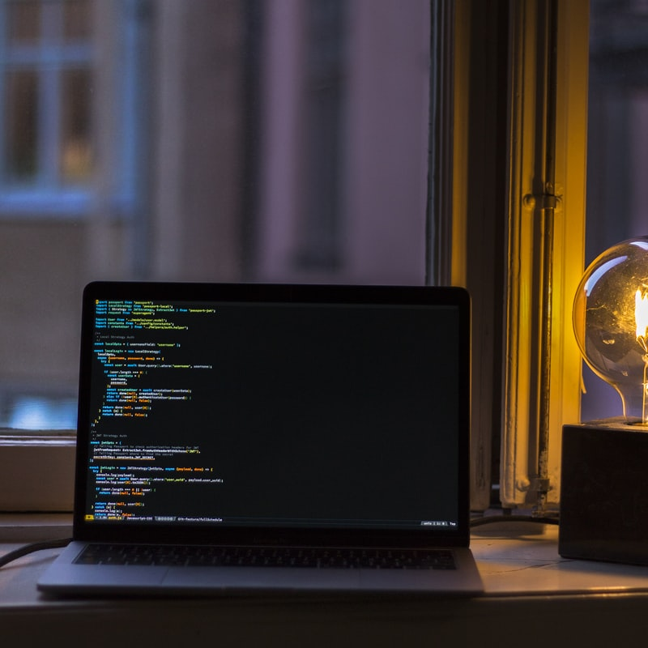

Take a look

This webpage showcases a cloud hosting page. This minimalistic design is orientated towards an enhanced user experience. It is simple, readable and very functional. Based on HTML5 with CSS3 and incorporate some JavaScript. Coluri is a responsive page proposition for every company who offers this kind of service.
One of my first web development projects was the creation of a survey form. Being a coffee lover myself, the page is dedicated to gathering informations through closed questionaire about their coffee tastes. The focus of this project was the utilization of form elements to retrieve user input.

The layout of this page is designed for a blog post with widgets linking to other posts. The webpage itself is responsive to browser size changes targeting desktop and smartphone users. The theme of the page is bike orientated.
The first web project I ever made was a tribute page fot the late Polish painter Franciszek Starowieyski. It is a simple design made to give a brief overview of the artist’s trajectory highlighting the exhibitions where his artwork was showcased. This design focused heavily on creating different spaces through the contrast of color.
The design focused primarly on the utilization of images and high contrast text for an improved visual accessibility. The project showcased different locations of South-East Asia incorporating images seemlessly into the webpage. The elements were positioned using mere section tags.
This web design impements a flexbox layout to render the page responsive. The color palette and structure remain uniform throughout all of the pages. The main content is fixed to the left side and on the right there is side bar with links to the other webpage sections.